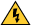
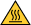

This help file uses the following formatting and typographical conventions: edit this list according to the specific conventions used in your help file.
| < > | Angle brackets that contain numbers separated by an ellipsis represent a range of values associated with a bit or signal name—for example, AO <0..3>. |
| [ ] | Square brackets enclose optional items—for example, [response]. |
| » | The » symbol leads you through nested menu items and dialog box options to a final action. The sequence File»Page Setup»Options directs you to pull down the File menu, select the Page Setup item, and select Options from the last dialog box. |
| The symbol indicates that the following text applies only to a specific product, a specific operating system, or a specific software version. | |
|
This icon denotes a tip, which alerts you to advisory information. |
|
This icon denotes a note, which alerts you to important information. |
|
This icon denotes a caution, which advises you of precautions to take to avoid injury, data loss, or a system crash. |
|  | When symbol is marked on a product, it denotes a warning advising you to take precautions to avoid electrical shock. Only use in conventions, not in text. |
|  | When symbol is marked on a product, it denotes a component that may be hot. Touching this component may result in bodily injury. Only use in conventions, not in text. |
| bold | Bold text denotes items that you must select or click in the software, such as menu items and dialog box options. Bold text also denotes parameter names. |
| green | Underlined text in this color denotes a link to a help topic, help file, or Web address. |
| italic | Italic text denotes variables, emphasis, cross-references, or an introduction to a key concept. Italic text also denotes text that is a placeholder for a word or value that you must supply. |